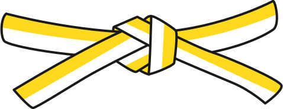
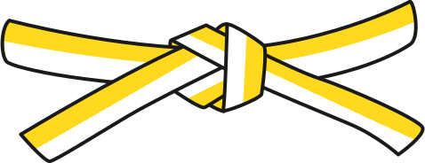
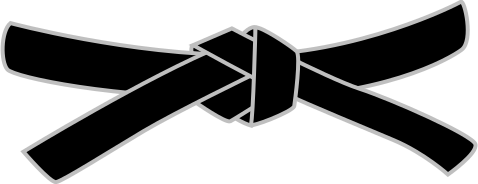
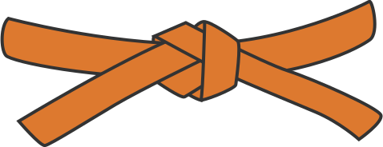
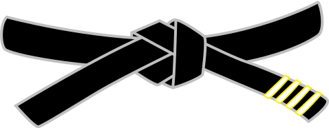
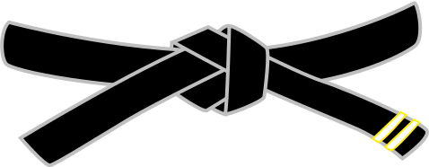
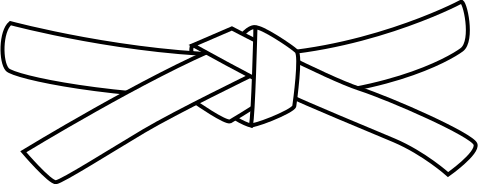
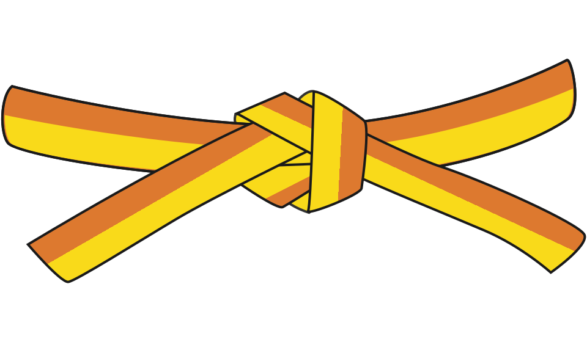

ANTO Christophe
Groupe: 5/8ans
Points tournois: 89 points
Catégorie : -30kg / Poussin
Grade: Blanche-Jaune
Groupe: 5/8ans
Points tournois: 89 points
Catégorie : -30kg / Poussin
Grade: Blanche-Jaune
Groupe: Ados/Adultes
Compétitions: P.Grade/Moselle
Catégorie : -70kg / Vétéran
Fonction : Président
Grade: 1er Dan
Groupe: Ados/Adultes
Compétitions: P.Grade/Moselle
Catégorie: +60kg / Vétéran
Fonction : Trésorier
Grade: 1er Dan
Groupe: 5/8ans
Points tournois: 130 points
Catégorie : +22kg / Mini-Poussin
Grade: Orange
Groupe: Ados/Adultes
Compétitions: C.France Vétéran
Catégorie: +70kg / Vétéran
Fonction : Entraineur
Grade: 4ème Dan
Groupe: Ados/Adultes
Compétitions: Coupe G.Est/France
Catégorie: +60kg / Senior
Grade: 2ème Dan

Groupe: 5/8ans
Points tournois: 76 points
Catégorie: +25kg / Mini-Poussin
Grade: Blanche

Groupe: 9/12ans
Points tournois: 83 points
Catégorie: +55kg / Benjamin
Grade:
Orange-Verte
Groupe: Ados/Adultes
Compétitions: P.Grade
Catégorie: +80kg / Vétéran
Fonction : Assesseur
Grade: 1er Dan
Groupe: Ados/Adultes
Compétitions: P.Grade
Catégorie: +80kg / Vétéran
Fonction : Vice-Président
Grade: 1er Dan

Groupe: 9/12ans
Points tournois: 75 points
Catégorie: +35kg / Poussin
Grade: Jaune-Orange